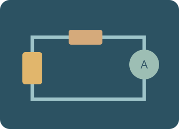
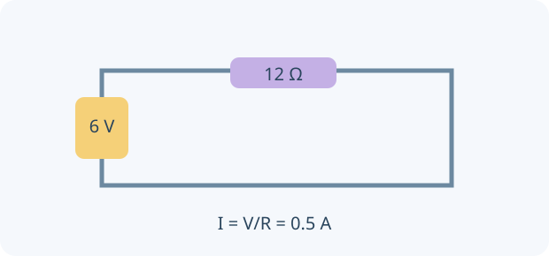

Electricity and electrostatics
Build a circuit, measure electric force, diagnose protection devices and investigate the energy behind an electricity bill.

Build the idea, one step at a time.
Charge is a property of matter, and current is the rate at which charge passes a point. Voltage is energy transferred per unit charge between points, not the amount of current stored in a wire. Resistance describes the relationship between voltage and current for a component under defined conditions.
A circuit needs an appropriate closed path for sustained current. Series components share current; parallel branches share voltage between the same two nodes. Use V = IR for an ohmic resistor at constant temperature. Coulomb’s law describes electrostatic force under a different model, and electrical safety requires distinguishing excess current from an imbalance caused by leakage.

01 · Charge, current and potential difference
Current is charge flow per second: I = Q/t. Potential difference is energy transferred per coulomb: V = E/Q. Conventional current leaves the positive terminal; electrons in metal drift the other way.
02 · Series and parallel circuits
Series components carry the same current and share the supply voltage. Parallel branches have the same voltage; branch currents add. Use V = IR for an ohmic resistor at constant temperature.
03 · Force between charges
For ideal point charges, F = k|q₁q₂|/r². Like signs repel and unlike signs attract. Convert μC to C and use centre-to-centre distance in metres. A field is force per positive test charge; field arrows point away from positive charges.
04 · Power and energy
P = VI = I²R = V²/R for a resistor. Electrical energy E = Pt. Bills use kWh, a unit of energy: 1 kWh = 3.6 MJ. A tariff is a price per kWh.
05 · Protection and safe isolation
An overcurrent breaker or fuse protects wiring against excessive current. An RCD compares outgoing and returning current and disconnects when there is sufficient imbalance. Earthing provides a protective path. An RCD does not replace overcurrent protection.
You can read these explanations without operating the simulator. The practical activities, games and revision below let you apply the ideas and check your reasoning.
Now investigate →Predict. Investigate. Explain.
Preparing the apparatus…
Choose an investigation, then follow the steps.
Starting stories and prediction · one clock, two objects
Compare a head start in position with a delayed release. B waits at its starting position until its start time.
Record and compare your results.
Up to 10 trials per investigation, kept while this page is open. Reloading clears the notebook. These practical notes and lesson checks are not sent to the teacher.
Check your understanding
Connect the model to the physics
Charge, current and potential difference
Current is charge flow per second: I = Q/t. Potential difference is energy transferred per coulomb: V = E/Q. Conventional current leaves the positive terminal; electrons in metal drift the other way.
Worked example. A current of 0.50 A transfers 30 C in one minute. A 6 V supply transfers 6 J per coulomb.
Series and parallel circuits
Series components carry the same current and share the supply voltage. Parallel branches have the same voltage; branch currents add. Use V = IR for an ohmic resistor at constant temperature.
Worked example. At 6 V, 10 Ω and 20 Ω in series give I = 0.20 A. In parallel, the branch currents are 0.60 A and 0.30 A.
Force between charges
For ideal point charges, F = k|q₁q₂|/r². Like signs repel and unlike signs attract. Convert μC to C and use centre-to-centre distance in metres. A field is force per positive test charge; field arrows point away from positive charges.
Worked example. Doubling separation quarters the force; changing one charge’s sign reverses direction without changing magnitude. Fields are an optional extension in the charge investigation.
Power and energy
P = VI = I²R = V²/R for a resistor. Electrical energy E = Pt. Bills use kWh, a unit of energy: 1 kWh = 3.6 MJ. A tariff is a price per kWh.
Worked example. A 2 kW heater used for 3 h consumes 6 kWh. At 0.30 currency units/kWh this costs 1.80.
Protection and safe isolation
An overcurrent breaker or fuse protects wiring against excessive current. An RCD compares outgoing and returning current and disconnects when there is sufficient imbalance. Earthing provides a protective path. An RCD does not replace overcurrent protection.
Worked example. Use the virtual fault board to compare an earth fault with a balanced overload. This isolated diagram is a model, not instructions to work on a real mains socket.
Classroom connections
Use the apparatus model to test a prediction, record two trials with one changed condition, then explain the difference with an equation or diagram. Use your teacher’s worksheets for assessed tasks. The revision simulator below offers practice, mixed questions and a Test yourself mode.
Explore the PhET Coulomb’s Law model ↗Try it. Solve it. Play again.
Circuit Snap and Circuit Rescue: move cards, build a model and use feedback to work out the next step.
Ready to test your understanding?
Choose from 60 questions on electricity and electrostatics. Select question areas and levels, practise with explanations or take a Test yourself quiz, then retry mistakes.